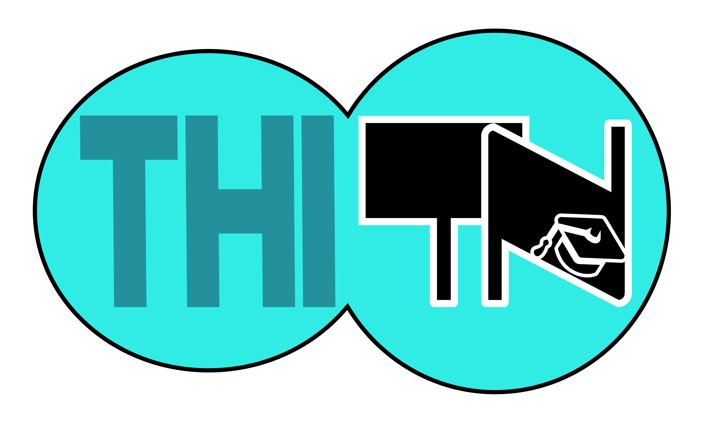

Đề môn Tiếng Anh số 2
Trường THPT Đa Phúc
Tác giả: Hữu Hùng Hiền Hòa
90
:phút
00
:giây
Ghi Chú
Mark the letter A,B,C or D on your ansewer sheet to indicate the underline part the that needs
correction ineach of the following questions.
Question 1
Electric
wires
carry current
for
lighting
and outlets
designing
for household appliances.
A:Electric.
B:carry current.
C:lighting.
D:designing.
Question 2
Edith Roosevelt was a
deveted
mother of a child
of five
,
as well
a
gracious
hostess.
A:devoted
B:of five.
C:as well.
D:gracious.
Question 3
Vocation counseling
guides
students and helps them
to understand
how
occupations differ
and what job oppotunities
are exist
.
A:devoted
B:of five.
C:as well.
D:gracious.
Question 4
In summer
, warm southern
air carries
moist
to the eastern and
central
United States.
A:In summer.
B:air carries.
C:moist.
D:central.
Question 5
The water temperature in
a spring
depends
on that
of the soil throught
where
the water
flows
.
A:a spring.
B:on that.
C:where.
D:flows.
Mark the letter A,B,C or D on your ansewer sheet to indicate the word(s) CLOSEST in meaning to
the underlined word(s) in each of the following questions.
Question 6
Some of the rude drivers on the road today are the ones who will not allow other cars to
merge
into traffic
A: blend.
B: concentrate.
C: secede.
D: desensitize.
Question 7
The Red Cross made an
equitable
distribution of the bread to the straving children
A: just
B: nutritious
C: quick
D: convenient
Question 8
His new yacht is certainly an
ostentatious
display of his wealth.
A: large.
B: expensive.
C: showy.
D: ossified.
Mark the letter A,B,C or D on your ansewer sheet to indicate the word whose underline part differs
from the other three in pronunciation in each of the following questions.
Question 9
A: bot
a
nical
B: attr
a
ct
C: c
a
ncer
D: char
a
cter
Question 10
A: situa
tion
B: equa
tion
C: precau
tion
D: discre
tion
Read the following passage and mark the letter A,B,C or D on your answer sheet to indicate the
correct word or phrase that best fits each of the numbered blanks from 11 to 20.
All relationships go through difficult times. In the past, when married couples had problems
they usually didn't(11)______. They had to either(12)_____with each other or continue to live together
in an unhappy relationship. Getting divorced wan't such a bad thing. They say that relationships require
hard wark and (13)___. "If a relationship is going to last a lifetime, you have to keep working at it," say
Doreen, who is celebrating her fiftieth wedding anniversary this year. "It isn't all roes and romance
(14)____can be perfect all of the time. These days young people give up when there's the(15)____
argument." Experts agree that communication is key. The most important thing is to (16)__talking.
How many times have you heard yourselt say to (17)___."If only you'd listen!" or "I wish you (18)__
do that!"The truth,the (19)____couples talk, the better their relationship (20)__be.
Question 11:
A: grow up
B: split up
C: Chat up
D: make up
Question 12:
A: get on
B: go out
C: get back
D: fall out
Question 13:
A: agreement
B: argument
C: achievement
D: commitment
Question 14:
A: No one
B: Someone
C: Anyone
D: Everyone
Question 15:
A: smallest
B: slightest
C: most violent
D: most controversial
Question 16:
A: raise
B: control
C: stop
D: keep
Question 17:
A: anybody
B: everyone
C: someboy
D: nobody
Question 18:
A: wouldn't
B: couldn't
C: shouldn't
D: didn't
Question 19:
A: more
B: fewer
C: less
D: least
Question 20:
A: would
B: could
C: will
D:can
Mark the letter A,B,C or D on your ansewer sheet to indicate the correct ansewer to each of the
following questions.
Question 21:
Everyone expects Johnson to______ Smith in today's final.
A: beat
B: win
C: scre
D: champion
Question 22:
Let's face ___ we are destroying the enviroment and we need to do something now.
A: truth
B: facts
C: things
D: information
Question 23:
Many lives were saved____the introduction of anbiotics.
A: into
B: at
C: with
D: in
Question 24:
A
: "What is it?"
B:
"We don't know until___ at it under a microscope."
A: we're going to lock
B: we'll have locked
C: we'll be looking
D: we've looked
Question 25:
Ten million text messages are sent on___ every minute.
A: normal
B: general
C: common
D: average
Question 26:
White phosphourus, a substance___ in matches, is so flammable that it burst into flame upon
contact with the air.
A: is common
B: common
C: which being common
D: being common, is
Question 27:
More than on student____ to do those mathermatic puzzles whichby the teacher last week.
A: has tried/ was given
B: have tried/ were given
C: has tried/ were given
D: have tried/ was given
Question 28:
"Haven't you put an ad in the paper yet?"-"____"
A: I will, first thing in the morning
B: I can get a paper for you
C: I'm not sure
D: I'm with you there
Question 29:
Susan's doctor insists____ for a few days.
A: that she is resting
B: her resting
C: that she rest
D: her to rest
Question 30:
Feeling tired after a long day of hard work,____.
A: the housework was of no interest to me.
B: my mother helped me with the housework.
C: I asked my mother to help me with the housework.
D: the housework was too much for me.
Question 31:
"You've really changed." - "____"
A: Yes,I am
B: I'll never change my mind
C: Have I?
D: Oh,sorry,I can't
Question 32:
She must have been sleep last night. Otherwise,her eyes___so bloody now.
A: won't look
B: wouldn't look
C: wouldn't have looked
D: looked
Question 33:
The use of computers aids in teaching,___ the role of teachers is still very important.
A: althougt
B: yet
C: so that
D: because
Question 34:
You've got to be___ certain before you decide.
A: deadly
B: deadthly
C: dead
D: deadth
Question 35:
She had just enough time to___ the report before the meeting.
A: dip into
B: go into
C: turn round
D: get through
Question 36:
A:
"Well, could you call ther airline and reconfirm my flight? I'm kindof busy right now."
B:
"__________".
A: Not at all.
B: I'll try. Let me have details.
C: What are you doing?.
D: What do you think I should do?.
Question 37:
Don't worry! By the time you arrive tomorrow, we____ the work.
A: have completed
B: had completed
C: will have completed
D: would have completed
Question 38:
It was announced that neither the passengers nor the driver in the car crash____.
A: have been
B: were injured
C: are injured
D: was injured
Question 39:
______ that he had no choise but to leave early.
A: In such a situation did he find himseft
B: In such a situation he found himseft
C: He found himseft in a situation where
D: He found himseft in a so embarrassing situation
Read the following passage and mark the letter A,B,C or D on your ansewer sheet to indicate the
correct ansewer to each of the questions from 40 to 49
On 26
th
May 1828, the people of Muremberg in Germany found a teenage boy who was wandering
alone thorough the stressts. When they came across him, he had no
possessions
except for two old
letters. Because of his behaviour and appearance, they took him to the police station. Kaspar spent the
next two months is prison,where he hardly spoke and refused all food except for bread and water.Some
people assumed that Kaspar had grown up alone in the forest, like a wild animal. But gradually,a differnt
picture emerged.
Kaspar said he had spent his whole chidhood in a small dark cell. He had never seen the world outside
or left his cell. He had never met or spoken to another human being. The cell was empty apart from a
small bed and one toy-a wooden horse. He claimed that he had found break and water in his cell every
morning. According to Kaspar's account, a mysterious man had begun to
call on
him shortly before his
release. The man never showed his face.
Kaspar became well-known throughout Germany and in other countries too, and found his story
fascinating. Some suggested that Kaspar was the son of rich and powerful man-a prince parhaps-who
wanted to keep his indentity secret. A schoolteacher called Friedrich, Daumer met Kaspar and agreed to
look after him . Daumer taught him various subject and encouraged Kaspar's talent for drawing.
One day in 1829, Kaspar was found with a knife wound to his head. He claimed that a man with a
hood
over his face had attacked him-the same man who had brought him to Nuremberg. It wasn't a
serious injury, and Kaspar got over it. But in 1833, Hauser came hime with a deep knife wound chest,
saying someone had attacked him in a garden. Three days latter, Kaspar died from the wound. Just
before he died,Kaspar told the police that his attacked had given him a bag, so the police went to the
garden and and looked for it. They found it, with a note inside. The note wa in miror writing and said in
Greman: "I want to tell you about myseft. I come from the Bavarian border, on the river."
Over the years, books have been written about Kaspar's stories and various historian have looked into
them. Most have concluded that the stories were untrue and that Kaspar Hauser was a liar who killed
himseft (possibly by mistake). But for some people,Kaspar Hauser's life and death remain one of the
most mysterious stories in history.
Question 40:
People in Nuremberg took Kaspar Hauser to the police station because______.
A: he was carrying two letters
B: he said he wanted to be soldier
C: he was acting strangely
D: he had no possessions
Question 41:
Before Kaspar told his story,some people believed that he had grown up____.
A: in prison
B: with his father
C: without any people around him
D: in a normal home
Question 42:
According to this passage, the word "
possession
" is closest in meaning to____.
A: belongings
B: valuable
C: worth
D: savings
Question 43:
According to his story ,Kaspar spent the first year of his life_____.
A: in a dark cell with a mysterious man
B: in a dark cell with absolutely nothing in it
C: in the garden of mysterious stranger
D: alone and always indoors
Question 44:
According to this passage, the phrase "
call on
" refers to_____.
A: speak to
B: visit
C: invite
D: asked
Question 45:
Some people suggested that Kaspar Hauser was____.
A: from another country
B: really an artist
C: the son of a schoolteacher
D: from a wealthy family
Question 46:
Betwen 1829 and 1833,Kaspar Hauser suffred_____.
A: two knife wounds,but they weren't serious
B: two knife wounds, one small and one fatal
C: two very serious knife wounds
D: two knife wound on the same occasion
Question 47:
According to this passage, the word "
hood
" is closest in meaning to_____.
A: mask
B: strocking cap
C: bonnet
D: top hat
Question 48:
Police found a mysterious letter inside a bag____.
A: in Kaspar Hauser's room, after his death
B: in the place where Kaspar Hauser died
C: near a river in Baravia
D: in the place where Kaspar Hauser was attacked
Question 49:
Most historians today believed that Kaspar Hauser_____.
A: was the son of a Baravian prince
B: was one of the most mysterious people in history
C: invented the story of his life
D: did not really die from the knife wound
Mark the letter A,B,C or D on your ansewer sheet to indicate the word that differs from the other
three in the position of primary stress in each of the following questions.
Question 50:
A: magnificent
B: eliminate
C: archaelogy
D: stability
Question 51:
A: enthusiast
B: voluntarily
C: picturesque
D: underlined
Question 52:
A: misadventure
B: misbehaviour
C: misconception
D: mischievously
Read the following passage and mark the letter A,B,C or D on your answer sheet to indicate the
correct answers to each of the questions from 53 to 62.
History books recorded that the first film with sound wa The Jazz Singer in 1927. But sound films,
or talkies, did not suddenly appear after years of
screenings
. From the earliest public performances in
1896, film were accompained by music and sound effects. These were produced by a single painist, a
small band, or full-scale orchestra; large movie theatres counld by sound-effect machines. Research into
sound that was reproduced at exactly at the same time as the picture - called "
synchronized sound
"-
began soon after the very first film were shown.With synchronized sound, characters on the movie
screen, could sing and speak. As early as 1896, the newly invented gramophone, which played a large
disc carrying music and dialogue, was used as sound system. The biggest disadvantage was that the
sound and picture could become unsynchronized if, for example, the gramophone needle jumped or if
the speed of the projector changed. This system was only effective for a single song or dialogue
sequence.
In the "
sound-on-film
" system, sound was recorded as series of marks on celluloid which could be
read by an optical sensor.
These signals
would be placed on the film alongside the image,guaranteeing
synchronized. Short feature films were produced in this way as early as 1922. This system eventually
brought us "talking picture".
Question 53:
The passage is mainly about the____
A: history of silent moves
B: disadvantage of synchronized sound
C: development of sound with moves
D: research into sound reproduction
Question 54:
According to the passage, films using sound effects were screened_____
A: before 1896
B: as early as 1896
C: as early as 1992
D: in 1927
Question 55:
The word "
screenings
" in is closest in meaning to____.
A: projections
B: revelations
C: demostrations
D: diversions
Question 56:
Which of the following is not mentioned as a producer of sound to accompany movie?
A: a jazz singer
B: single pianist
C: a small
D: a gramophone
Question 57:
It can be inferred that____.
A: most movie theaters had a painist
B: sound-effect machines were not common because they were expensive
C: orchestras couldn't synchronized sound with the pictures
D: gramophones were developed about the same time as moving picture.
Question 58:
According to the passage, gramophones were ineffective because they____.
A: got out of synchronization with the pictures
B: were too large for most movie theaters
C: were newly invented and still had imperfections
D: changed speeds when the needle jumped
Question 59:
According to the passage, the word "
sequence
" is closest in meaning to_____.
A: intergretation
B: progression
C: distribution
D: organization
Question 60:
According to the passage, the phrase "
these signals
" refers to____.
A: sounds
B: series
C: marks
D: sensors
Question 61:
According to the passage, "
sound-on-film
" guaranteed synchronization because the
recording was____.
A: made during the film of the picture
B: read by an optical sensor
C: inserted beside the image on the film
D: marked on the gramophone
Question 62:
Short feature films produced as early as 1922_____.
A: were recorded by optical sensor
B: put musicians out of work
C: were only effective for dialogue sequences
D: preceding talking picture
Mark the letter A,B,C or D on your ansewer sheet to indicate the word(s) OPPOSITE in meaning to
the
underline
word(s) in each of the following questions.
Question 63:
Names of people in the book were changed to
preserve
anonymity.
A: reveal
B: conserve
C: cover
D: presume
Question 64:
Doctors have been criticized for their
indiscriminate
use of antibiotics.
A: disciplined
B: selective
C: wholesale
D: unconscius
Correct answers: